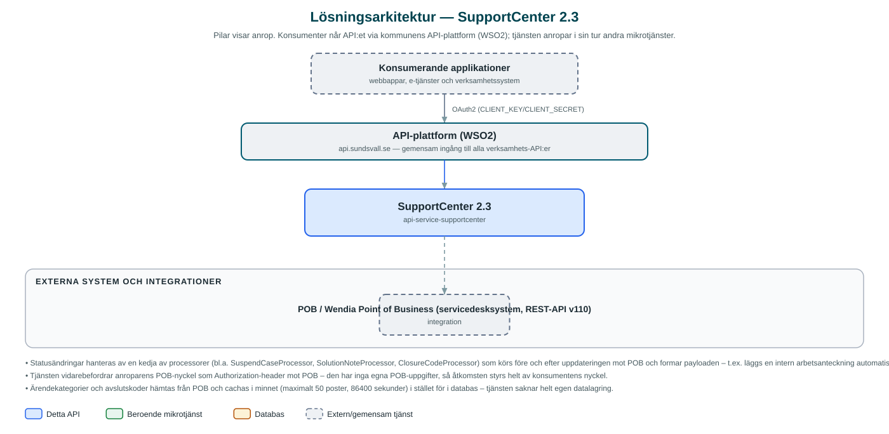

SupportCenter
API för att skapa och uppdatera ärenden och tillgångar (assets) i IT-servicedesksystemet POB, med enhetlig statushantering ovanpå POB:s eget API.
Om API:et
SupportCenter är kommunens gemensamma väg in till servicedesksystemet POB (Wendia Point of Business). I stället för att applikationer integrerar direkt mot POB:s omfattande API erbjuder tjänsten ett förenklat REST-gränssnitt för att skapa, uppdatera och hämta ärenden, hantera anteckningar samt registrera och uppdatera tillgångar som datorer och annan utrustning via serienummer.
Vid statusändringar gör tjänsten mer än att bara vidarebefordra: en kedja av processorer översätter den önskade statusen till rätt kombination av fält i POB – exempelvis parkeras och återupptas ärenden med särskilda anrop, lösnings- och arbetsanteckningar läggs till automatiskt vid leverans, och avslutskoder valideras mot POB:s konfiguration.
Tjänsten är medvetet tunn och tillståndslös: den har ingen egen databas utan hämtar ärendekategorier och avslutskoder från POB och cachar dem i minnet i ett dygn. Anroparen skickar med sin egen POB-API-nyckel i varje anrop, så behörigheten styrs per konsument snarare än av tjänsten själv.
Det här gör API:et
- Ärenden i POB – Skapa, uppdatera och hämta servicedeskärenden med anteckningar av olika typer.
- Enhetlig statushantering – Statusändringar översätts till rätt fältkombinationer i POB, inklusive parkering och återupptagning av ärenden.
- Tillgångshantering – Registrera och uppdatera tillgångar (t.ex. datorer) via serienummer i POB:s konfigurationsregister.
- Konfigurationsuppslag – Hämtar giltiga ärendekategorier och avslutskoder från POB, cachade i ett dygn.
- Behörighet per anropare – Varje anrop autentiseras mot POB med anroparens egen API-nyckel (pobKey-header).
API-dokumentation
API:ets samtliga resurser, parametrar och datamodeller finns beskrivna i en OpenAPI-specifikation som är hämtad ur källkodsförrådet. Den kan utforskas interaktivt i Swagger UI eller laddas ner som YAML.
Teknisk dokumentation
Nedan beskrivs hur tjänsten är uppbyggd, vilka andra tjänster den anropar och vad som krävs för att driftsätta den. Informationen är härledd ur källkoden och dess konfiguration på GitHub.
Arkitektur

API:et är en mikrotjänst (Java 25, Spring Boot via kommunens gemensamma tjänsteplattform dept44 (8.0.8), byggd med Maven). Konsumenter når tjänsten via kommunens gemensamma API-plattform (WSO2) på api.sundsvall.se – tjänsten anropas aldrig direkt. Övriga integrationer som förekommer i koden: POB / Wendia Point of Business (servicedesksystem, REST-API v110).
Teknikstack
- Språk: Java 25
- Ramverk: Spring Boot via kommunens gemensamma tjänsteplattform dept44 (8.0.8), byggd med Maven
- Övrigt: Processorkedja för statusövergångar, Caffeine-cache för POB-konfiguration, Resilience4j (circuit breaker mot POB), Feign-klient
Beroenden till andra mikrotjänster
Inga anrop till andra mikrotjänster hittades i källkodens konfiguration.
Konfiguration och driftsättning
- application.yml med bas-URL och timeouts för POB-integrationen
- Ingen egen databas – tjänsten är tillståndslös
- Cache för ärendekategorier och avslutskoder (Caffeine, 24 timmars livslängd)
- Anroparens POB-API-nyckel skickas i pobKey-headern i varje anrop; municipalityId ingår i alla API-vägar
Noterbart ur källkoden
- Statusändringar hanteras av en kedja av processorer (bl.a. SuspendCaseProcessor, SolutionNoteProcessor, ClosureCodeProcessor) som körs före och efter uppdateringen mot POB och formar payloaden – t.ex. läggs en intern arbetsanteckning automatiskt till när ett ärende sätts till levererat.
- Tjänsten vidarebefordrar anroparens POB-nyckel som Authorization-header mot POB – den har inga egna POB-uppgifter, så åtkomsten styrs helt av konsumentens nyckel.
- Ärendekategorier och avslutskoder hämtas från POB och cachas i minnet (maximalt 50 poster, 86400 sekunder) i stället för i databas – tjänsten saknar helt egen datalagring.
- Till skillnad från de flesta andra tjänster i plattformen har SupportCenter inga beroenden till andra kommun-API:er – enda integrationen är POB.
Källkod
Källkoden är öppen och finns hos Sundsvalls kommun på GitHub. I källkodsförrådet finns även instruktioner för att klona, konfigurera och starta tjänsten i egen miljö.